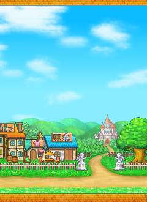
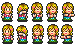
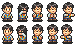

标题、91与17：原尺寸素材对照
固定汉化重签 APK 1.0.8 的图像，保持原尺寸。下方 Steam 2.56 是独立版本的完整归档截图。本页只展示来源素材，未模拟业务数值、人物运动、输入或完整运行皮肤。
原皮肤坐标与状态合同 · 尺寸、包序与 SHA-256 摘要 · UI 研究入口
APK title 包：前五图片

序0 title00.png · 240×330
背景底部对齐，完整画面还包含动态人物。
序2 title_logo.png · 236×115
Logo的滑入／弹跳由原计数驱动，Steam Logo绑定待证。
序1 title_window.png · 98×68
文字另画，不能当拼好菜单。
序3 title_cursor.png · 28×23
序4 title_grass.png · 240×18
APK 纪录、91与17：事件背景和角色原图
相同背景在不同页面使用不同裁片。角色原PNG是图集，需要对应SEB解释层、翻转与偏移；本页不猜单帧裸裁片。
event图片9 · event_backGlad.png · 180×80
纪录整图(30,78)；91在(30,65)裁源(0,9,180,63)。
event图片13 · 180×80
17在(30,105)，另画中央内框。

common图片172 · chara_hishoko.png · 75×44
17左角色，消费SEB31 chara_hisho。

common图片171 · chara_president.png · 75×44
17右角色，消费SEB46 chara_president。
Steam 2.56：完整 S038 标题归档
截图含系统标题栏，DPI与客户区比例未测。英文 Logo、中文“开始游戏／纪录”、设置／键盘／语言组件属于该截图的观察；不能用它替换APK原包序或推断点击热区。未操作原游戏，原91／纪录／17窗口尚待对照。
本页不依赖网络、脚本或外部框架；直接打开HTML即可。原版文字不是图片图集已能全部还原：Android与Steam字形、字宽、字号、基线和平台输入仍需认证。现有HTTP预览器白名单未增加此文件。